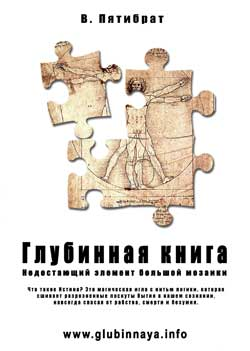
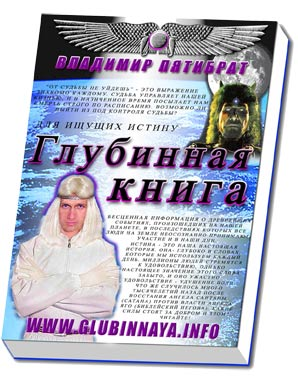

|
|
|
|
|
|
|
| Наша "родная" власть умеет пользоваться не только кнутом. Если что, мы и пряником можем уе**ть!
|
|
|
|
|
|
|
|
| Людьми управляют больше при помощи их пороков, чем добродетелей.
|
| |
Новость, которая может изменить МИР
Друзья, здесь Вы можете прикоснуться к информации, поднятой из глубины веков Владимиром Пятибратом в его работе " Глубинная книга" и, возможно, найти для себя ответы на самые волнующие вопросы. Наверное, таких скопилось немало за всю жизнь, и в душе хочется знать, в чем же все таки смысл нашего существования? Глубинная книга дает непривычный взгляд на МИР. В ней Вы узнаете, например, о том, что смерть имеет микробиологическую природу, о реальных медико-технических возможностях достижения физического бессмертия человека, что такое кибернетический комплекс под названием "Судьба", известный нам из культур большинства народов мира как сила, управляющая жизнью и смертью, окончательно поставить для себя точку в еврейском вопросе, узнать откуда на земле появилась женщина и какова ее загадочная роль в жизни нашей цивилизации, и, наконец, что Сатана, имеющий множество имен, знакомых нам с детства, на самом деле является антиподом, противником Дьявола. Сегодня власть уже знает об этом. Готовы ли к восприятию Вы? Ученые, инженеры, медики, учителя и художники, люди добрые, ценность наших жизней может превзойти все ожидания! Говорит автор
Что такое Истина? Это магическая игла с нитью логики, которая сшивает разрозненные лоскуты бытия в нашем сознании, навсегда спасая от рабства, смерти и безумия...  Жители Земли! Моя душа прошла сквозь смерть и тысячелетия, бездну космического пространства и я обращаюсь к вам для откровенного и серьёзного разговора. Я не буду говорить с вами как спасённый и безгрешный, очищенный от всякой скверны, ведь я такой же, как и все вы. Я хочу лишь предложить свою помощь и сотрудничество в решении, как оказалось, общих проблем. Молчать дальше нет никакого смысла, я надеюсь, что вам хватит силы самообладания выслушать меня. Предполагаю, что большинство людей, прочитав эту книгу – проклянут меня, но, быть может кто-то и вспомнит меня не раз добрым словом, – на понимание и признание многих я и не рассчитываю. Просто я хочу реализовать своё человеческое право на свободную мысль, защитить страдающих братьев от гибели и делаю для этого то, что считаю нужным. Я постараюсь рассказать вам как можно больше, насколько хватит сил, сколько успею.
Убийство - тяжкий труд, особенно целых планет и миров. Нас ведь с вами убедили с самого детства, что смерть это нормальное явление, что умирать даже полезно, странам, людям, планетам, мол, это фундамент для чего-то нового, прекрасного... Меня почти в этом убедили, но "учителя" не сумели перевесить своими доводами, мои доводы, что я собрал за свою жизнь. Я не верю в благость смерти, разрушения и хаоса, если только это не разумная разборка, демонтаж, отключение того что я решил сам, в трезвом уме. Даже чтоб убить тело, его надо долго и усиленно ломать самому, обществу, микромашинами (микробами) изнутри, ядами снаружи... (это как постоянно врезаться на авто в стену, заливать грязь вместо масла, мочу вместо топлива). Творец спроектировал нас слишком крепкими, надёжными, светлыми и сильными. Даже после остановки дыхания, сердцебиения, понижения температуры, жизнь может продолжаться в теле, а при определённых условиях дать начало настоящей полной жизни, это когда Воля и сила наполняет каждую вашу клеточку тела, смерть митохондрий и вашей судьбы не смерть тела а перерождение в безсмертное тело предков. Я имею такой опыт, и счастлив что мне выпал такой билет, хоть на время стать настоящим, не куклой для игр богов... Но для обретения воли надо слишком многое узнать, многому научится, это самая тяжёлая наука, самый важный экзамен... Необязательно попадать в Ад, туда забирают только самых лучших, самых хороших, это мы сейчас живём в "Аду", просто не все ещё это поняли...
В.Пятибрат
Глубинная Книга
|
|
Стволовые клетки: Японские биологи впервые вырастили печень из стволовых клеток
[05/07/2013]
Японские биологи создали методику, которая позволяет выращивать полноценные "заготовки" печени из перепрограммированных стволовых клетоки пересаживать их в тело мыши или человека, что позволит в ближайшем будущем восстанавливать эти органы при повреждении и болезнях, говорится в статье, опубликованной в журнале Nature.
(подробнее... | 2655 байтов еще | Комментировать? | Стволовые клетки | Всего: 0) |
Власть: Как победить в психоисторической войне
[05/07/2013]
Мы живём в военное время — военное вдвойне. Натовской агрессией против Югославии, а точнее — против сербов — началась перманентная горячая война, ставшая следствием разрушения СССР: Афганистан, Ирак, Ливия, Сирия. Одновременно с горячей, то параллельно ей, то переплетаясь с ней, развивается набирающая силу иная форма войны — организационная война. Ее главной целью является разрушение оргструктур (структур управления) общества-мишени — всех: от социальных и финансовых до структур сознания и познания, т.е. структур психосферы в самом широком смысле этого слова. Именно эта сфера постепенно становится основным театром действий организационной войны, которая в психосфере становится войной психоисторической.
(подробнее... | 7123 байтов еще | Комментировать? | Власть | Всего: 0) |
Общество: Мысли о деньгах ведут к плохому поведению
[04/07/2013]
Новое исследование показывает, что одни только мысли о бумажных деньгах могут провоцировать людей подсознательно принимать неэтичные решения.
(подробнее... | 4104 байтов еще | Комментировать? | Общество | Всего: 0) |
Стволовые клетки: Конец удалению нерва: зубы будут восстанавливаться сами собой
[03/07/2013]
"Могут ли дни удаления зубного нерва, которое десятилетиями было символом самого мучительного типа малых операций, наконец, быть сочтены?" - задается вопросом Шерли Вэнг в статье в The Wall Street Journal. "Ученые продвинулись в лечении кариеса и надеются, что им удастся восстановить ткани зуба и избежать болезненной процедуры. Ряд новых испытаний на животных показал, что процедуры, связанные со стволовыми клетками, кажется, способствуют восстановлению крайне важной живой ткани зуба - пульпы", - говорится в статье.
(подробнее... | 3557 байтов еще | Комментировать? | Стволовые клетки | Всего: 0) |
Физиология людей: Образ жизни мужчины влияет даже на правнуков
[03/07/2013]
Оказывается, образ жизни мужчины влияет не только на детей, но на внуков и правнуков. Генные мутации, вызванные образом жизни отца, наследуются его детьми. А результаты новых исследований показывают, что мутации сохраняются во всех клетках детей, включая половые клетки, и передаются последующим поколениям. Это значит, что образ жизни мужчины влияет на ДНК сразу нескольких поколений - мутировавшие гены обнаруживаются не только у детей, но и у внуков и правнуков.
(подробнее... | 2675 байтов еще | Комментировать? | Физиология людей | Всего: 0) |
Технологии: Исследование: Электромобили вреднее бензиновых
[02/07/2013]
Электрические автомобили относятся к наиболее грязным с точки зрения экологии видам транспорта. К такому парадоксальному выводу пришёл американский исследователь Оззи Зенер. В статье, опубликованной журналом IEEE Spectrum, Зенер опровергает распространённый миф о том, что электромобили не наносят вред природе.
(подробнее... | 1556 байтов еще | Комментировать? | Технологии | Всего: 0) |
Геноцид: Как ГМО загрязняет наш организм
[02/07/2013]
Никто не будет спорить, что «мы — то, что мы едим». Это относится ко всем продуктам, которые мы употребляем в пищу, в том числе и к генетически-модифицированным организмам. Чем больше мы вкушаем «запретных плодов», тем выше риск развития трансгенного загрязнения нашего организма и организмов наших потомков.
(подробнее... | 5187 байтов еще | Комментировать? | Геноцид | Всего: 0) |
Власть: Как осуществляется цензура в США
[30/06/2013]
Часто у меня спрашивают, каким образом в США, где, якобы пресса свободна, и никакой цензуры нет в помине, властям удается столь эффективно промывать мозги быдлу? Почему "свободная" пресса столь единодушно и тенденциозно освещает ситуацию в Сирии, Иране, ранее - в Ливии, Ираке. Да и в отношении РФ тоже: достаточно вспомнить истерию в августе 2008 г. об агрессии России против маленькой, но свободолюбивой Грузии, а ранее американские масс-медиа воспевали славную борьбу чеченского народа за свободу и демократию. Совсем уж необъяснимо участие ведущих американских СМИ в мистификации событий 11 сентября 2001 г.Вряд ли сами журналисты верят в чудовищный бред про мифических арабских террористов, которые обрушили башни-близнецы, но они с фанатичным упорством втюхивают эту дезу всему миру уже второй десяток лет.
(подробнее... | 8431 байтов еще | Комментировать? | Власть | Всего: 0) |
Судьба: Какое будущее готовт роидная система жизни
[26/06/2013]
У меня была возможность брать интервью у более чем 300 главных ученых, работающих в лабораториях и фактически создают будущее. Поэтому мои предсказания основаны не на фантастике, а на полученной информации, поэтому они сбываются.
(подробнее... | 20992 байтов еще | 1 Комментарий | Судьба | Всего: 0) |
Технологии: Создана словянская сеть, работающая по принципам наших праотцов-Атлантов
[25/06/2013]
Суть новой технологии проста: использовать множество мобильных и стационарных устройств, как своего рода ретрансляторы интернета. Фактически, любое устройство, мобильное или стационарное, станет маршрутизатором, «раздающим» интернет всем, кто поблизости.
(подробнее... | 5273 байтов еще | Комментировать? | Технологии | Всего: 5) |
Технологии: Сахар сделал мозг прозрачным
[25/06/2013]
Разработан метод получения сахарного раствора, который делает биологические ткани прозрачными. В сочетании с флюоресцентной микроскопией он позволил японским ученым впервые получить изображения мышиного мозга с беспрецедентно высоким разрешением.
(подробнее... | 4212 байтов еще | Комментировать? | Технологии | Всего: 0) |
Геноцид: Эффект разорвавшегося помидора.
[25/06/2013]
Весной и летом мы традиционно стараемся есть побольше овощей и фруктов, потому что они свежие, с витаминами и, главное, выращены у нас, а не привезены из далеких земель. Но на самом деле «нашим» овощам и фруктам доверять уже не стоит.
Зачастую их выращивают иностранные рабочие на запрещенных удобрениях, а надзором за содержанием в них пестицидов не занимается ни одна государственная служба.
(подробнее... | 13666 байтов еще | Комментировать? | Геноцид | Всего: 0) |
Общество: Куда прут «лидеры»
[25/06/2013]
Как показывает российская история, стать молодым лидером можно сразу, даже не испачкав рук о железо и ум о знания. Нужно просто хорошенько натренировать язык, усвоив еще в школьные годы набор из нескольких нужных слов и фраз типа словаря Эллочки-людоедки из «Двенадцати стульев» Ильфа и Петрова.
(подробнее... | 9750 байтов еще | 2 Комментарии | Общество | Всего: 0) |
Флора и фауна: Растения подсчитывают, сколько крахмала они могут съесть за ночь
[25/06/2013]
Чтобы не голодать в тёмное время суток, но при этом не переставать расти, растения корректируют скорость расхода запасённого крахмала, исходя из длины ночи и общего запаса питательного углевода. В течение дня растения с помощью энергии, получаемой из солнечного света, превращают углекислый газ в сахара. А те (в том числе крахмал) потом идут в пищу самому растению, поставляя энергию делению клеток, сборке биологических макромолекул, поддержанию физиологических процессов и т. д. Но когда наступает ночь, растения уже не могут синтезировать крахмал, и им приходится полагаться на запасы углеводов, сделанные днём.
(подробнее... | 3249 байтов еще | 1 Комментарий | Флора и фауна | Всего: 0) |
Технологии: "Умные" таблетки превратят людей в ходячие пароли
[25/06/2013]
Все больше и больше компаний, от мелких стартапов до крупных предприятий, экспериментирует с компьютерами в виде таблеток, которые человек должен проглотить. Находясь в желудке, они могут отправлять врачу важную информацию о состоянии здоровья, снимать блокировку экрана, когда смартфон оказывается в руке, или открывать двери при подходе к автомобилю.
(подробнее... | 2884 байтов еще | 1 Комментарий | Технологии | Всего: 0) |
| |
|
|
|
|
|
|
|
| Не зарегистрировались? Вы можете сделать это, нажав здесь. Когда Вы зарегистрируетесь, Вы получите полный доступ ко всем разделам сайта. |
|
|
|
|
|
|
|
| Информация временно не доступна ... |
|
|
|
|
|
|
|
Гостей: 8
 Пользователей: 0 Пользователей: 0
Всего: 8
|
|